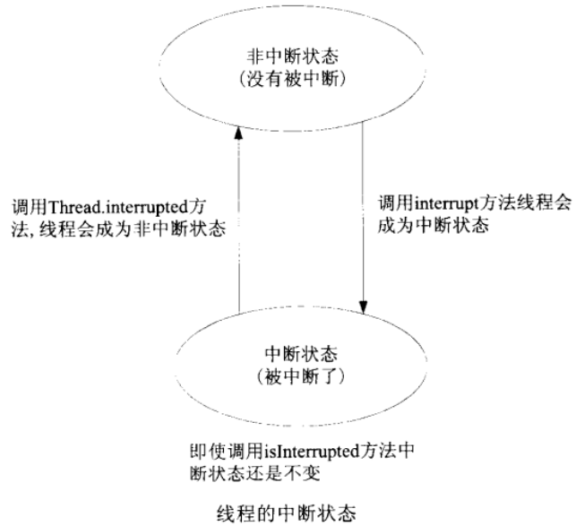
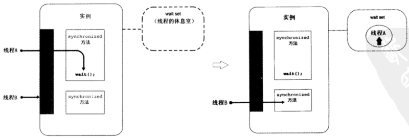
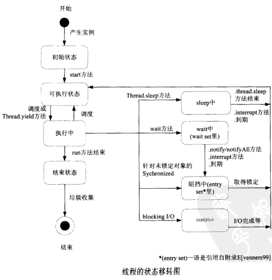

线程的基本概念
- 单线程
- 多线程
线程的基本操作
- 创建
- 暂停
- 互斥
- 中断
- 协调
线程的状态转移
一、线程的基本概念
1.1 单线程
简单的说，单线程就是进程中只有一个线程。单线程在程序执行时，所走的程序路径按照连续顺序排下来，前面的必须处理好，后面的才会执行。
Java示例：
public class SingleThread {
public static void main(String[] args) {
for (int i = 0; i < 10000; i++) {
System.out.print(i + " ");
}
}
}上述Java代码中，只有一个主线程执行main方法。
1.2 多线程
由一个以上线程组成的程序称为多线程程序。常见的多线程程序如：GUI应用程序、I/O操作、网络容器等。
Java中，一定是从主线程开始执行（main方法），然后在主线程的某个位置启动新的线程。
二、线程的基本操作
2.1 创建
Java中创建多线程类两种方法：
1、继承java.lang.Thread类
Java示例：
public class MyThread extends Thread {
public void run() {
for (int i = 0; i < 10000; i++) {
System.out.print(i + " ");
}
}
}
public class MultiThread {
public static void main(String[] args) {
MyThread t = new MyThread();
t.start(); //启动子线程
//主线程继续同时向下执行
for (int i = 0; i < 10000; i++) {
System.out.print(i + " ");
}
}
}上述代码中，MyThread类继承了类java.lang.Thread，并覆写了run方法。主线程从main方法开始执行，当主线程执行至t.start()时，启动新线程（注意此处是调用start方法，不是run方法），新线程会并发执行自身的run方法。
2、实现java.lang.Runnable接口
Java示例：
public class MyThread implements Runnable {
public void run() {
for (int i = 0; i < 10000; i++) {
System.out.print(i + " ");
}
}
}
public class MultiThread {
public static void main(String[] args) {
Thread t = new Thread(new MyThread());
t.start(); //启动子线程
//主线程继续同时向下执行
for (int i = 0; i < 10000; i++) {
System.out.print(i + " ");
}
}
}上述代码中，MyThread类实现了java.lang.Runnable接口，并覆写了run方法，其它与继承java.lang.Thread完全相同。实际上，java.lang.Thread类本身也实现了Runnable接口，只不过java.lang.Thread类的run方法主体里空的，通常被子类覆写（override）。
注意：主线程执行完成后，如果还有子线程正在执行，程序也不会结束。只有当所有线程都结束时（不含Daemon Thread），程序才会结束。
3、Executors.newCachedThread
通过线程池新建一个线程。
2.2 暂停
Java中线程的暂停是调用java.lang.Thread类的sleep方法（注意是类方法）。该方法会使当前正在执行的线程暂停指定的时间，如果线程持有锁，sleep方法结束前并不会释放该锁。
Java示例：
public class Main {
public static void main(String[] args) {
for (int i = 0; i < 10; i++) {
System.out.print(i + " ");
try {
Thread.sleep(1000); //当前main线程暂停1000ms
} catch (InterruptedException e) {
}
}
}
}上述代码中，当main线程调用Thread.sleep(1000)后，线程会被暂停，如果被interrupt，则会抛出InterruptedException异常。
2.3 互斥
Java中线程的共享互斥操作，会使用synchronized关键字。线程共享互斥的架构称为监视（monitor），而获取锁有时也称为“持有(own)监视”。
每个锁在同一时刻，只能由一个线程持有。
注意：synchronized方法或声明执行期间，如程序遇到任何异常或return，线程都会释放锁。
1、synchronized方法
Java示例1：
//synchronized实例方法
public synchronized void deposit(int m) {
System.out.print("This is synchronized method.");
}注：synchronized实例方法采用this锁（即当前对象）去做线程的共享互斥。
Java示例2：
//synchronized类方法
public static synchronized void deposit(int m) {
System.out.print("This is synchronized static method.");
}注：synchronized类方法采用类对象锁（即当前类的类对象）去做线程的共享互斥。如上述示例中，采用类.class（继承自java.lang.Class）作为锁。
2、synchronized声明
Java示例：
public void deposit(int m) {
synchronized (this) {
System.out.print("This is synchronized statement with this lock.");
}
synchronized (Something.class) {
System.out.print("This is synchronized statement with class lock.");
}
}注：synchronized声明可以采用任意锁，上述示例中，分别采用了对象锁（this）和类锁（something.class）
2.4 中断
java.lang.Thread类有一个interrupt方法，该方法直接对线程调用。当被interrupt的线程正在sleep或wait时，会抛出InterruptedException异常。
事实上，interrupt方法只是改变目标线程的中断状态（interrupt status），而那些会抛出InterruptedException异常的方法，如wait、sleep、join等，都是在方法内部不断地检查中断状态的值。
- interrupt方法
Thread实例方法：必须由其它线程获取被调用线程的实例后，进行调用。实际上，只是改变了被调用线程的内部中断状态；
- Thread.interrupted方法
Thread类方法：必须在当前执行线程内调用，该方法返回当前线程的内部中断状态，然后清除中断状态（置为false） ；
- isInterrupted方法
Thread实例方法：用来检查指定线程的中断状态。当线程为中断状态时，会返回true；否则返回false。

2.5 协调
1、wait set / wait方法
wait set是一个虚拟的概念，每个Java类的实例都有一个wait set，当对象执行wait方法时，当前线程就会暂停，并进入该对象的wait set。
当发生以下事件时，线程才会退出wait set：
①有其它线程以notify方法唤醒该线程
②有其它线程以notifyAll方法唤醒该线程
③有其它线程以interrupt方法唤醒该线程
④wait方法已到期
注：当前线程若要执行obj.wait()，则必须先获取该对象锁。当线程进入wait set后，就已经释放了该对象锁。
下图中线程A先获得对象锁，然后调用wait()方法（此时线程B无法获取锁，只能等待）。当线程A调用完wait()方法进入wait set后会自动释放锁，线程B获得锁。

2、notify方法
notify方法相当于从wait set中从挑出一个线程并唤醒。
下图中线程A在当前实例对象的wait set中等待，此时线程B必须拿到同一实例的对象锁，才能调用notify方法唤醒wait set中的任意一个线程。
注：线程B调用notify方法后，并不会立即释放锁，会有一段时间差。

3、notifyAll方法
notifyAll方法相当于将wait set中的所有线程都唤醒。
4、总结
wait、notify、notifyAll这三个方法都是java.lang.Object类的方法（注意，不是Thread类的方法）。
若线程没有拿到当前对象锁就直接调用对象的这些方法，都会抛出java.lang.IllegalMonitorStateException异常。
obj.wait()是把当前线程放到obj的wait set；obj.notify()是从obj的wait set里唤醒1个线程；obj.notifyAll()是唤醒所有在obj的wait set里的线程。
三、线程的状态转移

- 当创建一个Thread子类或实现Runnable接口类的实例时，线程进入【初始】状态；
- 调用实例的start方法后，线程进入【可执行】状态；
- 系统会在某一时刻自动调度处于【可执行】状态的线程，被调度的线程会调用run方法，进入【执行中】状态；
- 线程执行完run方法后，进入【结束】状态；
- 处于【结束】状态的线程，在某一时刻，会被JVM垃圾回收；
- 处于【执行中】状态的线程，若调用了Thread.yield方法，会回到【可执行】状态，等待再次被调度；
- 处于【执行中】状态的线程，若调用了wait方法，会进入wait set并一直等待，直到被其它线程通过notify、notifyAll、interrupt方法唤醒；
- 处于【执行中】状态的线程，若调用了Thread.sleep方法，会进入【Sleep】状态，无法继续向下执行。当sleep时间结束或被interrupt时，会回到【可执行状态】；
- 处于【执行中】状态的线程，若遇到阻塞I/O操作，也会停止等待I/O完成，然后回到【可执行状态】；